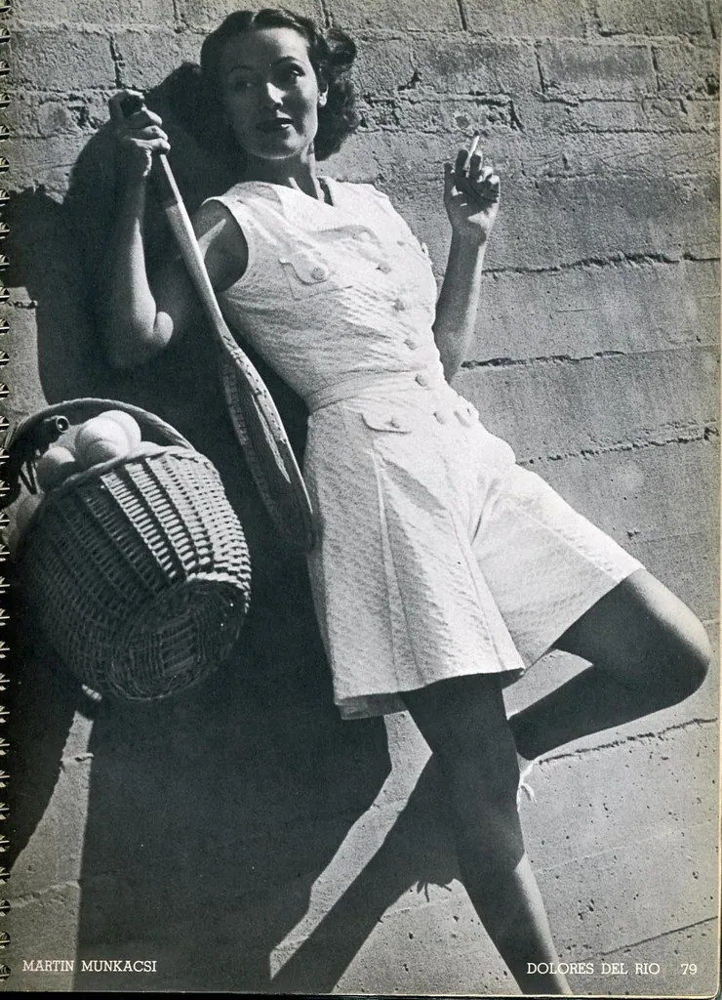

Biographies
History is made by people. Here are brief, honest portraits of seven historical figures worth remembering, presented with both their achievements and their human complexity.

History is made by people, and there is no better way to understand an age than through the lives of those who shaped it. Here are brief portraits of a few historical figures worth remembering — presented with their achievements and their human complexity alike, for no life is a simple tale.
Benjamin Franklin (1706–1790)
Printer, scientist, inventor, writer, diplomat, and statesman, Benjamin Franklin was perhaps the most versatile of America's founders. Rising from humble beginnings as a printer's apprentice, he built a successful publishing business, then turned his restless mind to science, where his experiments with electricity won him international fame. He invented useful things without patenting them, believing knowledge should be freely shared, and he founded libraries, a fire company, and institutions of learning.
In his later years Franklin became a central figure in the founding of the United States, helping to draft the Declaration of Independence and securing the crucial French alliance during the Revolution. Witty, practical, and endlessly curious, he embodied the self-improving spirit of his age. Like all people, he had his flaws and his blind spots, and his views evolved over a long life — he came, late, to oppose slavery, which he had earlier been part of. He remains one of history's great examples of a curious mind put to the service of the public good, and his homely sayings on thrift and industry are quoted to this day.
Clara Barton (1821–1912)
Clara Barton earned the name "the Angel of the Battlefield" for her tireless work tending wounded soldiers during the American Civil War, often bringing supplies and care to the front lines at great personal risk. A schoolteacher by training and a woman of fierce determination in an age that gave women few public roles, she carved out a path of service through sheer force of will and compassion.
After the war, Barton's humanitarian work continued and widened. Learning of the International Red Cross movement in Europe, she campaigned to bring it to America, and in 1881 she founded the American Red Cross, leading it for more than two decades. Under her guidance the organization expanded its mission to include disaster relief in peacetime, a legacy that endures today. Clara Barton's life is a testament to what one determined person can achieve in the service of others.
Marie Curie (1867–1934)
Born in Poland and working largely in France, Marie Curie was one of the greatest scientists in history and a pioneer in the study of radioactivity — a term she herself coined. Through years of painstaking labor in difficult conditions, she and her husband Pierre discovered new elements, and her research opened entire fields of science and medicine. She became the first woman to win a Nobel Prize, and remains one of the very few people to win in two different sciences.
Curie's achievements are all the more remarkable for the barriers she overcame as a woman in a field that largely excluded them. During the First World War she developed mobile radiography units to help wounded soldiers, bringing her science directly to those in need. She worked, tragically, before the dangers of radiation were understood, and her health suffered for it. Her legacy lives on not only in the science she founded but in her example of dedication, brilliance, and quiet courage.
Abraham Lincoln (1809–1865)
Rising from a frontier childhood of poverty and little formal schooling, Abraham Lincoln became the sixteenth president of the United States and led the nation through its gravest crisis, the Civil War. A largely self-taught man of great eloquence and deep moral seriousness, he guided the Union through four terrible years and, in the Emancipation Proclamation and his support for the Thirteenth Amendment, set the nation on the path to ending slavery.
Lincoln's words endure as among the finest in the English language — the Gettysburg Address, brief and solemn, redefined the nation's purpose in a few immortal sentences. He was a man of melancholy and humor, of firmness and mercy, who sought at the war's end to bind up the nation's wounds. His assassination in 1865, just days after the war's effective end, cut short that work of reconciliation and made him a martyr. He is remembered as one of the greatest of American presidents.
Harriet Tubman (c. 1822–1913)
Born into slavery in Maryland, Harriet Tubman escaped to freedom and then, at enormous personal risk, returned again and again to the South to lead others out of bondage along the secret network known as the Underground Railroad. Known as "Moses" to those she guided, she is credited with leading dozens of enslaved people to freedom, never losing a single one of those in her care.
Tubman's courage did not end there. During the Civil War she served the Union as a scout, nurse, and spy, even helping to lead an armed raid that freed hundreds. In her later years she was active in the campaign for women's right to vote and devoted herself to caring for the elderly and the poor. Her life of selfless bravery, lived in the face of dangers most of us can scarcely imagine, has made her one of the most revered figures in American history.
Thomas Edison (1847–1931)
Few inventors have shaped daily life as thoroughly as Thomas Edison. Working from his famous laboratories, he and his teams produced a remarkable stream of inventions and improvements, including the practical incandescent light bulb, the phonograph, and important advances in motion pictures and electrical power. He held well over a thousand patents and helped build the systems that brought electric light and power into ordinary homes.
Edison was as much an organizer of invention as a lone genius, pioneering the industrial research laboratory where teams of workers pursued practical problems systematically. His famous remark that genius is "one percent inspiration and ninety-nine percent perspiration" captured his relentless, experimental approach. Like many driven figures he could be hard in business and was not without rivals and controversies. Yet the modern electrified world owes an immense debt to his tireless workshop.
Florence Nightingale (1820–1910)
Florence Nightingale transformed nursing from a lowly, disregarded occupation into a respected profession, and in doing so saved countless lives. Born into a comfortable English family that expected her to marry, she instead felt called to care for the sick, and during the Crimean War she led a group of nurses to tend wounded soldiers in appalling military hospitals. There she found filth, overcrowding, and disease killing more men than their wounds.
Nightingale's response combined compassion with hard-headed analysis. She improved sanitation and care, and she meticulously gathered statistics to prove that clean, orderly conditions dramatically reduced deaths — pioneering the use of data in public health and presenting it in clear, persuasive charts. Known as "the Lady with the Lamp" for her nighttime rounds among the wounded, she became a national heroine, and she used her fame to found modern nursing education and reform hospitals. Her blend of mercy and method changed medicine forever, and the clean, well-run hospital we now take for granted is in large part her legacy.
Frederick Douglass (c. 1818–1895)
Born into slavery, Frederick Douglass taught himself to read and write, escaped to freedom, and became one of the most powerful voices against slavery that the nation has ever known. A spellbinding orator and a gifted writer, he told the story of his own bondage in a famous autobiography and tirelessly argued the cause of abolition and equal rights before audiences across America and abroad.
Douglass advised presidents, published newspapers, and campaigned not only against slavery but for the rights of all people, including women's suffrage. His intellect and eloquence gave the lie to every argument used to justify the enslavement of Black Americans, and his life became a living testament to human dignity and the power of education. He remains a towering figure in the long struggle for freedom and equality, and his insistence that progress comes only through struggle still rings true today.
Lives worth remembering
These seven lives span continents and centuries, yet they share a common thread: each shows what determination, intellect, and courage can accomplish, often against great odds. We present them honestly, acknowledging that historical figures were human beings with flaws and contradictions, shaped by their times as well as shaping them. To understand them fully is to understand their ages the better.
There is deep pleasure and real instruction in the company of great lives. They remind us of what is possible, they illuminate the events they took part in, and they offer models of perseverance and principle. And they are a comfort, too, for nearly every one of them faced doubt, failure, and hardship on the way to what they achieved — proof that greatness is far more often the fruit of persistence than of ease. They are, in the end, not marble statues but people who chose, again and again, to do the hard and right thing — and that is a choice available to every one of us, in our own smaller ways, every day. When you have spent time with these men and women, the Everyday Explainers turn from people to the workings of the world they left us.